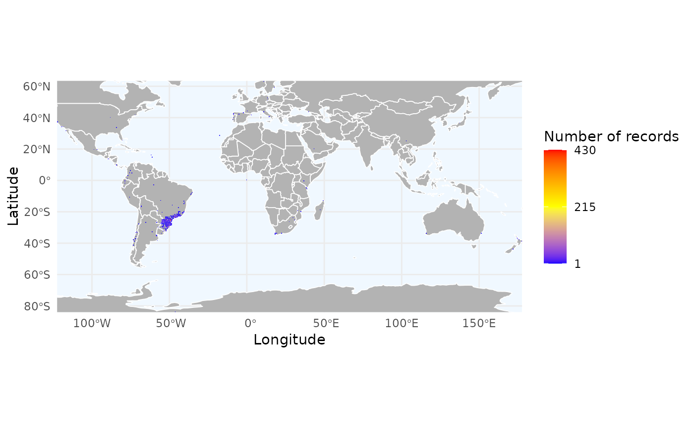
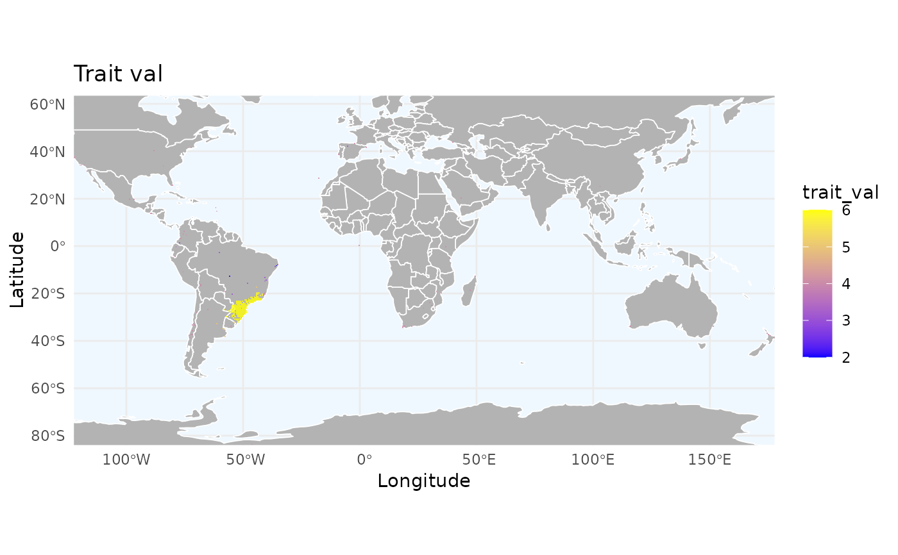
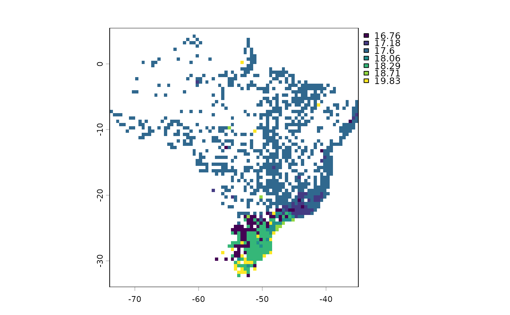

This function generates spatial grids (rasters) of species richness, record density, or summarized biological traits from occurrence data. It supports custom resolutions, masking, and automatic coordinate reprojection to match reference rasters.
Usage
richness_here(
occ,
species = "species",
long = "decimalLongitude",
lat = "decimalLatitude",
records = "record_id",
raster_base = NULL,
res = NULL,
crs = "epsg:4326",
mask = NULL,
summary = "records",
field = NULL,
fun = mean,
verbose = TRUE
)Arguments
- occ
(data.frame) a dataset containing occurrence records. Must include columns for species names and geographic coordinates.
- species
(character) the name of the column in
occthat contains the species scientific names. Default is"species".- long
(character) the name of the column in
occthat contains the longitude values. Default is"decimalLongitude".- lat
(character) the name of the column in
occthat contains the latitude values. Default is"decimalLatitude".- records
(character) the name of the column in
occthat contains the record names. Default is"record_id".- raster_base
(SpatRaster) an optional reference raster. If provided, the output will match its resolution, extent, and CRS. Default is
NULL.- res
(numeric) the desired resolution (in decimal degrees if WGS84) for the output grid. Only used if
raster_baseisNULL.- crs
(character) the coordinate reference system of the raster. (see ?terra::crs). Default is "epsg:4326". Only applicable if
raster_baseis not provided.- mask
(SpatRaster or SpatVector) an optional layer to mask the final output. Default is
NULL.- summary
(character) the type of summary to calculate. Either
"records"(number of occurrences per cell) or"species"(number of unique species per cell). Default is"records".- field
(character or named vector) columns in
occto summarize (e.g., traits). If a named vector is provided, names must match species inocc. Used to summarize traits or flags in both 'species' and 'records' modes. Default isNULL.- fun
(function) the function to aggregate
fieldvalues (e.g.,mean,max,sum). Default ismean.- verbose
(logical) whether to print messages about the progress. Default is
TRUE.
Examples
# Load example data
data("occ_flagged", package = "RuHere")
# Mapping the density of records
r_density <- richness_here(occ_flagged, summary = "records", res = 0.5)
ggrid_here(r_density)

# We can also summarize key features:
# 1. Identifying problematic regions by summing error flags
# We create a variable to store the sum of logical flags (TRUE = 1, FALSE = 0)
total_flags <- occ_flagged$florabr_flag +
occ_flagged$wcvp_flag +
occ_flagged$iucn_flag +
occ_flagged$cultivated_flag +
occ_flagged$inaturalist_flag +
occ_flagged$duplicated_flag
names(total_flags) <- occ_flagged$record_id
# Using summary = "records" with to see the average accumulation of errors
# with fun = mean to see the average accumulation
r_flags <- richness_here(occ_flagged, summary = "records",
field = total_flags,
fun = mean, res = 0.5)
ggrid_here(r_flags)

# 2. Or we can summarize organisms traits spatially
# Simulating a trait (e.g., mass) for each unique record
spp <- unique(occ_flagged$record_id)
sim_mass <- setNames(runif(length(spp), 10, 50), spp)
r_trait <- richness_here(occ_flagged, summary = "records",
field = sim_mass, fun = mean, res = 0.5)
ggrid_here(r_trait)
